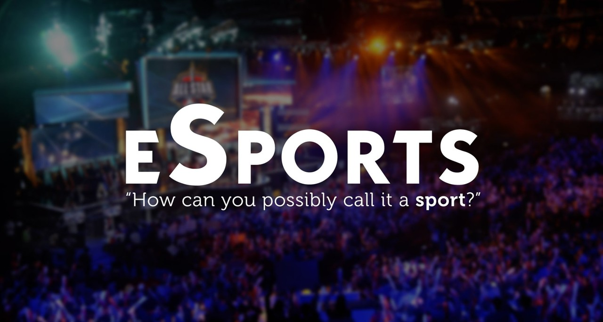
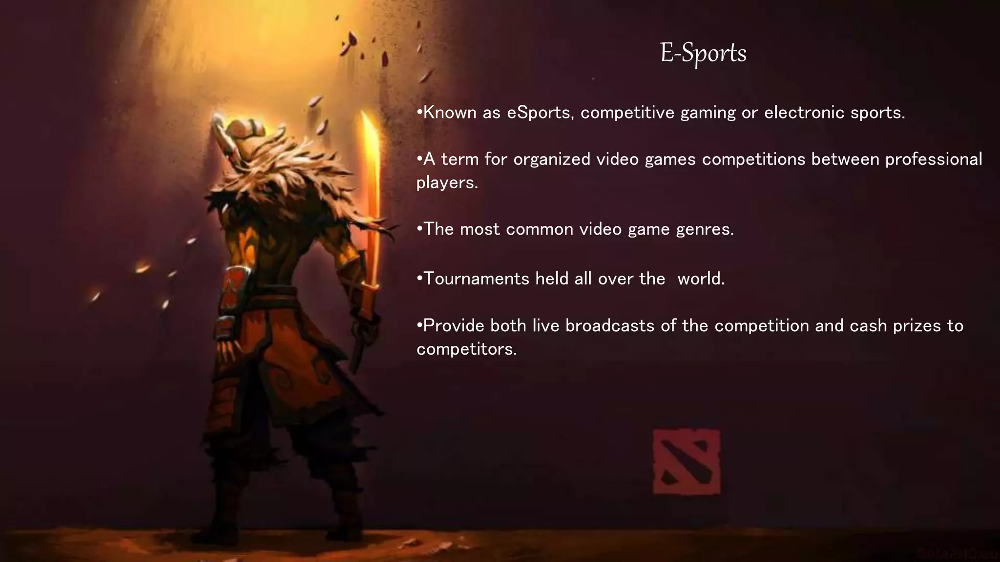

|
Esports, short for electronic sports, is a form of competition using video games.[1] Esports often takes the form of organized, multiplayer video game competitions, particularly between professional players, individually or as teams.[2] Multiplayer competitions were long a part of video game culture, but were largely between amateurs until the late 2000s, when the advent of online streaming media platforms, particularly YouTube and Twitch, enabled a surge in participation by professional gamers and spectators.[3][4] By the 2010s, esports was a major part of the video game industry, with many game developers designing for and funding for tournaments and other events. |
 |
|  |
One of the best things about sports is the way that there's something for everyone. The sheer amount and diversity of sports means that people who enjoy many different things can tune in and find a sport that they enjoy. In the last few decades, a new category of sport has joined the likes of baseball, basketball and football: Esports. Esports are video games being played professionally at a highly competitive level. In the same way as you have pros in things like Basketball, there are now pros in a variety of esports like League of Legends, Counter-Strike, Dota 2, and Fortnite. What began as an industry in back rooms and crowded auditoriums now fills stadiums worldwide, with top players making six figures in most of the tier-1 games. |
|
The global esports market size was valued at USD 1.45 billion in 2022 and is projected to grow from USD 1.72 billion in 2023 to USD 6.75 billion by 2030, exhibiting a CAGR of 21.5% during the forecast period. North America esports market was evaluated USD 0.44 Billion in 2022. In 2024, the revenue in the Esports market is forecasted to reach US$124.8m. This market is expected to experience a steady annual growth rate (CAGR 2024-2028) of 7.44%, resulting in a projected market volume of US$166.3m by 2028. |
According to a report by KPMG, the esports industry in India is expected to grow to INR 11,900 crore (approximately $1.6 billion) by 2025, driven by increasing smartphone and internet penetration and the growth of esports infrastructure in the country Several esports organizations have emerged in India, with professional esports teams representing the country at international tournaments. One such organization, Entity Gaming, has a roster of top esports players in India and has competed in tournaments around the world.
|
|
However, the growth of esports in India has not been without its challenges. The lack of government recognition and regulation has hindered the growth of the industry, with players and organizations facing issues such as tax implications, visa issues for international tournaments, and lack of funding. Despite these challenges, the future of esports in India looks promising, with the industry poised for significant growth in the coming years. With increasing investments and infrastructure development, esports is set to become a major player in India’s sporting landscape.
How popular is esports and where is it heading? Newzoo’s Global Esports and Live Streaming Market Report 20214 – one of the industry’s most trusted sources for esports statistics, market forecasting and analysis – predicts that:

|
Even today, the likelihood of success in competitive esports is scarce for casual gamers. As with traditional sports, participating at a professional level demands full commitment and dedication from players, who spend 70-80 hours per week training to be the best in their game. Teams/players often live together to optimize their training schedule, sharpen team strategy, tactics, and communications, and develop their individual skills by playing daily against other great players. Complex systems emerge around players to ensure they are ready for important matches. Training schedules include developing new tactics, perfecting current ones, and sparring with other teams and players to evaluate skills and identify gaps. Although they play video games, esports athletes find that physical and mental health are critical for success, so many teams embed nutrition, physical training, and psychological support in their daily routines. |